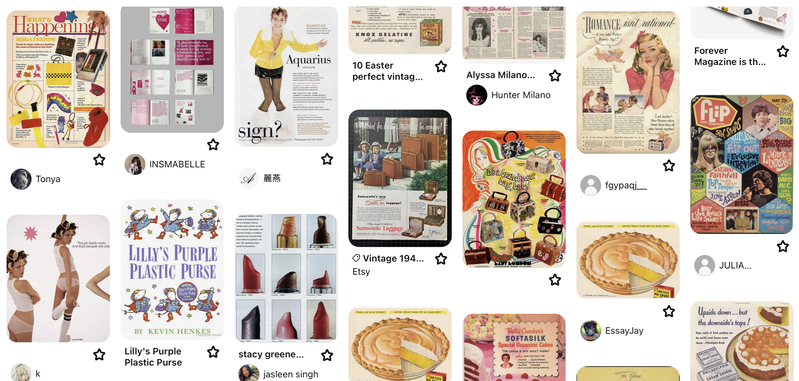

"Flip the Narrative" is a project that showcases graphics in an interactive, storytelling format.
Inspired by stories from my childhood and my recent fascination with 1960s advertisements, this project reimagines the narratives and lessons these tales sought to impart. One notable example is The Rainbow Fish. As a child, I questioned why the fish had to share parts of itself with others. While the intent to teach kids the value of sharing is clear, the idea of giving away physical pieces of oneself felt unsettling. Through this work, I aim to challenge and reinterpret these narratives, presenting them in a new light. I hope this project invites you to reflect, reminisce, and perhaps see these stories from a fresh perspective. Enjoy!